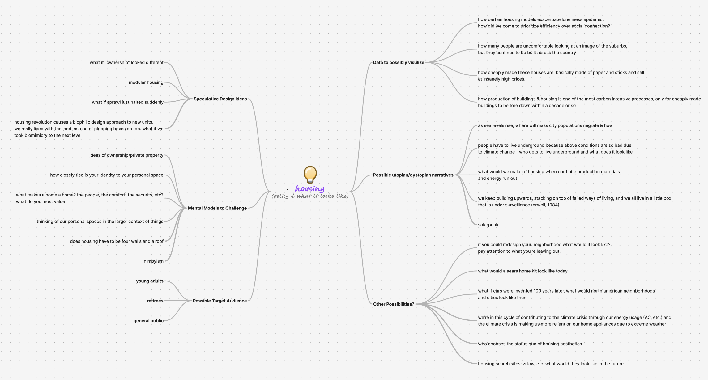

Climate Home Kit
Role: Developer and Designer
|
Timeline: April 2026 to June 2026
|
Tools: Illustrator, Photoshop, Procreate, Figma, HTML, CSS, and JS
Overview:
For my Interactive Media III capstone project themed "Designing the Future," I built an interactive website that speculates on the future of sustainable housing. This project explores how housing might evolve in response to climate change and post-fossil-fuel living by reimagining the historic Sears house kit as a participatory, modular, climate-resilient system for future communities. It combines speculative thinking, data visualization, and utopian narratives.

The Main Question(s):
What will housing need to look like in the future as energy infrastructure changes and climate change intensifies? How do we live more with the environment and the climate we are in? How can customization of a house become a learning process? My target audience became young adults navigating housing uncertainty and those frustrated by unaffordable, developer-driven housing.
The Process:
Initially, I was drawn to the idea of simulating a dystopian future by building a Zillow interface showing what the market would look like in 2060. However, I wanted the audience to walking away from my project feeling optimistic about the future, so I pivoted.

Further brainstorming led me to learn about the early 1900s Sears catalog home kits which I became drawn to because of how housing was imagined as something flexible and customizable. My goal became to allow users to customize a home. This developed into a "drag-and-drop" game inspired by early Adobe flash games my generation grew up with.
Research was conducted to inform the best compatibility of systems for user's choices. I created user flow charts beginning with three climate options (arid, temperate, and tropical). This resulted in me producing 48 different images for each climate, house shape, and material option in Illustrator. Other visuals took on a mixed-media collage style to represent community as something assembled from many parts.


The Outcome:
The user interface follows 7 steps and is followed by the assembly page where the user is prompted to assemble their house parts with further customization. After saving their design, they have the option to save an image of their creation. The design is automically uploaded to a backend database to later display in the "Neighborhood." A JSON file holds all of the descriptions and compatibility scores.

Overall, this project was a lot of fun to make. Having created it solo, I learned a lot about the backend and frontend process of creating a website and the amount of planning that goes into creating something like this. Thank you to my peers, professor, and T.A in Interactive Media III for all the support.